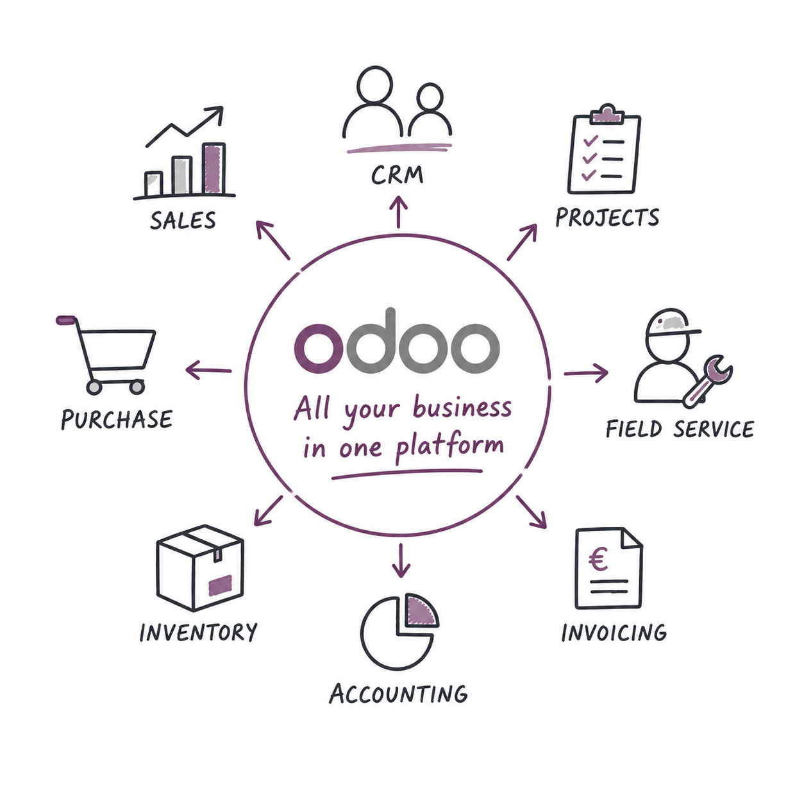
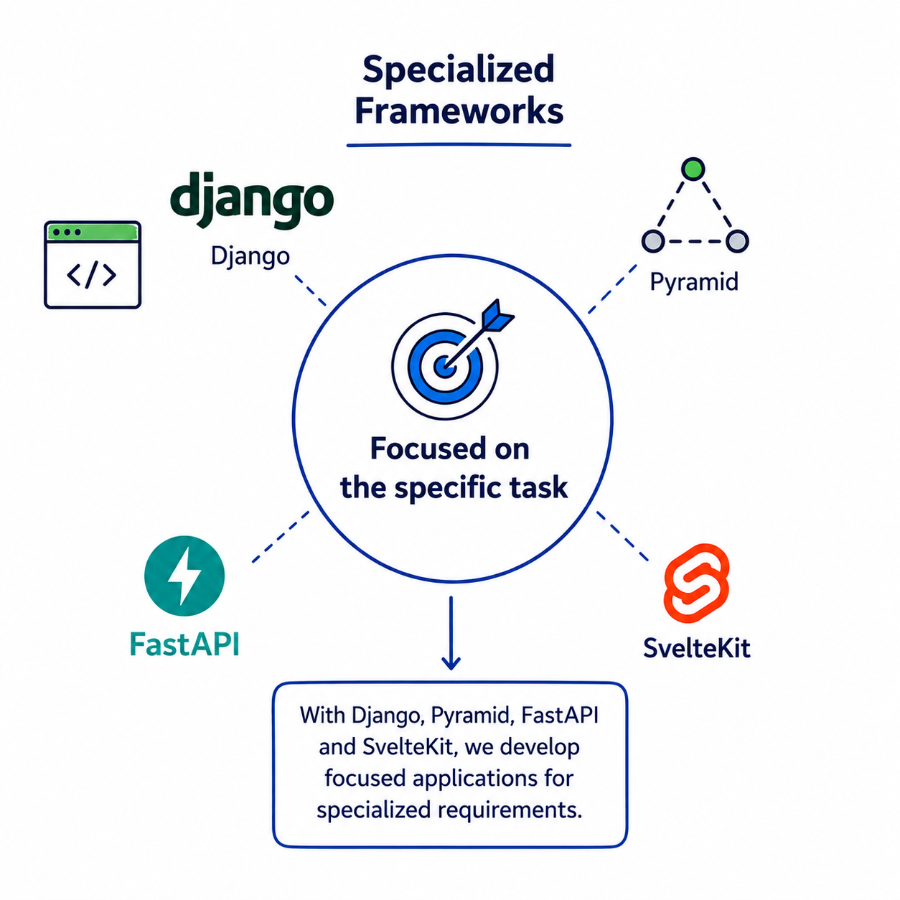

Solid and considered
Proven frameworks, limited dependencies and documented decisions create applications that work reliably in daily use.
Sustainable solutions for more than 20 years
We develop business applications with Python, modern JavaScript and open source. Maintainability, open standards and clear decisions protect their value for years to come.
Proven frameworks, limited dependencies and documented decisions create applications that work reliably in daily use.
Our solutions support teams in their processes and improve productivity and the quality of their results.
Open source and open interfaces keep systems accessible, extensible and transferable.
Updates, security work and migration are planned early and made predictable across years.
Two platforms, specialised frameworks and dependable care across the complete application lifecycle.



Tell us about the task. Together, we identify a useful next step.